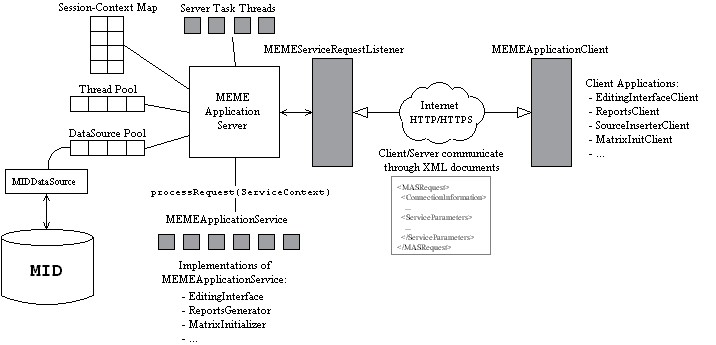
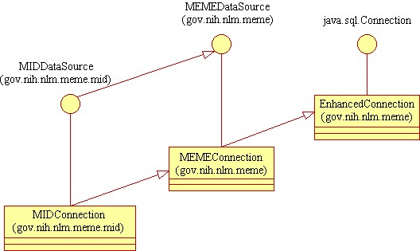

Goal
The development of a scalable, high performance, modular, distributed editing
environment built on a true client-server model using platform independent,
network-aware technologies.
Background
Until now, the core backend code for the Metathesaurus Enhancement and
Editing Environment (MEME) has been written in a combination of
OpenROAD code and database procedures. This fat-client model has
a number of inherent problems and will increasingly become more problematic
to support, maintain, and extend.
-
OpenROAD is a failed technology that does not natively support Oracle.
-
The OpenROAD fat-client employs a chatty protocol that reduces total network
throughput, and thus reduces application performance.
-
The current client model employs a number of perl scripts, MSDOS executables
(CONCEPTpp.exe), OpenROAD image files, and MSDOS batch files which makes
for difficult software deployment.
-
It is difficult and will become increasingly so to support code changes
to the OpenROAD applications, mostly because either nobody knows how to
do it or nobody wants to.
-
The best connection to OpenROAD we have from the outside world is the ORWeL
protocol, which makes it very difficult to build fast web-based applications
that incorporate meme editing services.
Solution
The MEME Application Server (MAS) solves the problems inherent in
the current editing environment by moving all client interactions with
the database to the server side, and employing a modular design for application
development/deployment. It meets the goals in the following ways:
-
It is scalable because it implements all backend operations on the server
side and caches frequently used data. Every client interaction with
the server involves a single message and response, rather than (potentially)
thousands of database lookups.
-
It is high performance because it employs a caching model that keeps frequently
used concepts (and the neighboring ones) in memory (while writing data
changes back to the disk as they happen). The system has a set of
server threads which process tasks during server idle times such as caching
all of the concepts on a particular worklist, or all of the concepts related
to a concept currently being edited.
-
It is secure because all client interactions can be authenticated, and
the server supports the HTTPS protocol. Additionally client sessions
are tracked by a session id so that all activity can be logged and associated
with a particular user.
-
It is modular because applications and clients can be added simply by implementing
the MEMEAppicationClient or MEMEApplicationService interfaces. Once
a certain functionality has been added to the server, adding additional
functionality does not require changing/altering any of the existing code.
-
It is distributed because clients interact with the server over the network
while the server maintains concurrency of the client actions.
-
It is platform independent because it employs the use of Java for the code,
and XML as the messaging medium.
-
It is network-aware because Java is a network-aware programming language.
What this means is that the applications/clients can be written in such
a way that they need not interact directly with the network because the
application server and client stubs (default MEMEApplicationClient implementation)
encapsulate all of the messy details.
MEME Application Server Architecture
The MAS is a thin-client three tier environment where Java/Perl clients
connect to a Java application server over HTTP by sending structured XML
documents. The server interacts with a Oracle database running on
the same machine through a DataSource object which performs all of the
necessary object-relational mappings. The architecture was designed
so that once the core Server/Client code is written, application developers
will not have to worry about network or database programming at all, and
can focus on program logic. Following is the high level architecture
diagram:

FIGURE 1
Client applications (those written in Java) will use implementations
of the MEMEApplicationClient interface (or possibly subclasses of the default
implementation of this interface which provides the networking code).
Server applications are implementations of the MEMEApplicationService interface.
The MEMEApplicationServer itself employs the use of a MEMEServiceRequestListener
which is a glorified HTTP socket server. The application server registers
itself as a MEMEServiceRequestHandler with the listener so new connections
can be reported via an event callback. The application server also
maintains a thread pool) for spinning off application requests), a data
source pool (to minimize the overhead associated with opening database
connections), a HashMap for mapping session ids with ServiceContext objects
(which encapsulate all information associated with a request) and a collection
of server task threads which are responsible for things like logging, processing
during server idle times, processing queued requests, etc. All communications
between server and client take the form of MEME application service request
(MASRequest) documents. You
can view the DTD for this document type here.
MEME Application Clients
Clients connecting to the MEME application server do not necessarily need
to be written in Java. Since the messaging protocol is an XML document,
any technology which can produce and respond to appropriately formatted
documents can serve as a client. However, any client that is written
in Java should use the MEMEApplicationClient interface or its default implementation
(HTTPApplicationClient). This default implementation will provide
a processRequest(MEMEServiceRequest) method which is responsible
for converting the java service request into a MASRequest XML document,
opening an HTTP connection, sending the request document to the server,
waiting for a response, and finally converting the response back to a Java
object and returning it to the calling method.
There are three kinds of messages that a client might send to the server:
-
Initiation request. When a persistent client starts up, such
as an editing interface, the first thing it will do is send a request to
the application server to initiate a session. The result of this
is that the server will assign the session a session ID and allocate all
of the necessary resources (from the ThreadPool, DataSourcePool, etc.)
for that session. It will then respond with a document containing
the clients session information (as well as any required software upgrades).
When sending an initiation request, the client can also specify a time-out
period, after which the server cleans up the allocated resources.
Additionally, the initiation request supports an authentication mechanism
(currently user/password) which can be used to authenticate a session.
-
Stateless request. Some clients do not need all of the overhead
of a session, but just want to make a request, receive a response, and
be done with it. A good example of this kind of client would be a
ReportsClient, which wants a concept report for a single concept id and
then it is done.
-
Stateful request. Once a client like an editing interface
has initiated a session, all future communications with the server should
include the session id. This way the server knows to use the already
allocated resources. This mechanism improves performance by not requiring
that each request reallocate all of the resources.
A client application can request services to be performed in one of four
ways:
-
Immediate request. Here, a client wants the server to process
the request as soon as possible and send a response. The client will
keep the HTTP connection alive until it gets a response.
-
Idle request. With this kind of request, a client wants the server
to process the request at some time in the future, after the server has
been idle for some predetermined amount of time (specified in a server
properties file). The server will respond immediately after the request
is queued and the client will close the HTTP connection. At a later
time, the client may re-connect and provide the session id from the idle
request and attempt to obtain any information about whether or not the
process has completed or if it has a log.
-
Queue request. Occasionally, applications will want to queue
requests for some particular time in the future, and not just for idle
cpu cycles on the server machine. For example, a client may connect
to inform the application server that the matrix initializer should run
every day at 6:30AM EDT.
-
Followup request. A client that has requested an idle or queue
job to be performed may want to check back later to verify that it completed
successfully and to obtain any logging information. Following up
on an idle or queue request involves re-connecting to the server and passing
the session id from the first request. Note: this means
that idle/queue requests must first obtain session ids (initiation request)
before their idle/queue request.
Eventually, it would be desirable for every application that interacts
with the MID to go through the application server. This means that
everything would eventually become a client application. The obvious
ones are things like: editing interface, rela editor, reports generator,
source inserter, matrix initializer, cui assignment, etc. Less obvious
ones, are things like the CGI applications: EMS, WMS, Action Harvester.
One additional client would be a web-based administration tool so that
the application server could be configured while it was running from the
web.
MEME Application Server
The application server itself does not have a lot of functionality built
into it. It acts mainly as a controller between a series of resources,
listeners, and handlers. It directs requests to the appropriate application
services or sever threads, and it creates the ServiceContext objects which
encapsulate the resources that a request might use. The application
server is configured by a set of properties stored in a known location
and is started by a simple perl script. The server will have access
to a file structure similar to the existing $MEME_HOME file structure so
that it can make use of non-java utilities (like CONCEPTpp.pl), if necessary.
The first thing the application server does when it starts up is to
instantiate a MEMEServiceRequestListener implementation (such as HTTPServiceRequestListener).
This object is a socket server that listens for incoming MASRequest documents.
The application server is an implementation of MEMEServiceRequestHandler
and it registers itself with the service request listener (which generates
MEMEServiceRequestEvents and forwards them to its listeners). The
application server also initializes a ThreadPool (pool of thread objects
which grows dynamically as needed) and a DataSourcePool (pool of DataSource
objects which grows dynamically as needed).
When a request comes in, the MEMEServiceRequestListener converts it
into a MEMEServiceRequest object and forwards it to the MEMEApplicationServer
(which is its listener). There are four things that it may do with
the request:
-
If it is an initiation request, it will allocate the necessary resources
and create a session id. It then encapsulates all of the resources
into a ServiceContext object and puts that into a HashMap with the session
id as the key. Finally, it wraps the session information for the
client in a MEMEServiceRequest object and sends it back to the listener.
-
If it is an idle request or a queue request, it forwards the request to
its own set of server threads which are responsible for managing these
kinds of requests (these are also implementations of MEMEServiceRequestHandler).
Note, processing of these requests happens in a separate thread so the
server continues listening for requests. Additionally, no HTTP response
is sent back until the process has finished running. This means that
the server thread responsible for handling idle requests has to add the
results to the hashed ServiceContext for the given session id.
-
If it is follow-up request to an idle request, then the server checks in
the SessionContextMap to determine if the results for that session's idle
processing are ready yet. If so, it returns them to the listener.
If not, it formats a MEMEServiceRequest to indicate that the results are
not ready and it forwards that instead.
-
If none of the above apply, the application server looks up the MEMEApplicationService
associated with the request, and passes the request encapsulated in a ServiceContext
to the application service (in a new thread). Here, the application
service must maintain a reference to the HTTPConnection that it is servicing
so that the listener can respond to the correct HTTP session.
MEME Application Services
This is the part of the back end that contains the actual program logic.
Requests that enter the system are requests for application services.
Implementations of the MEMEApplicationService interface provide those services.
As described above, the MEMEApplicationServer packages requests and
session environment into a ServiceContext which is forwarded to a specific
application service. These services run in separate threads so that
multiple requests can be processed in parallel. A property determines
the maximum number of application service threads that can be running at
a particular time and the available thread pool is managed by the application
server.
The actual interface implements a processRequest(ServiceContext)
method which extracts the MEMEApplicationServiceRequest from the ServiceContext
and examines the server parameters to determine exactly what operation
should be performed. For example, a client could request that the
EditingInterface application service merge two concepts. The fact
that it is a merge operation, and the parameters for the merge will all
be contained in the service request object. The ServiceContext will
contain other information such as the session id, the DataSource object
to be used, and a handle to the HTTP connection object which will be used
to send a response back to the client. Application services are responsible
for catching any exceptions that may occurr and forwarding them to the
client (this is part of the application service request object).
The MEMEApplicationServiceRequest class has a generic mechanism for passing
parameters to the server, and passing return values to the client.
Client and server applications must agree on the names and types of the
expected parameters and return values, and so should be developed in parallel.
Data Source Architecture
The MEME application server environment is a three-tier environment.
The third tier is an Oracle database, the MID. Borrowing from the
MRD design, the application server will employ database connection API
called a MEMEDataSource which shields the application programmer from interacting
directly with the database and JDBC calls. One advantage of
this kind of architecture is that the implementation of the MEMEDataSource
is the only code written specifically to interact with a particular database
(Oracle, in this case), which means that all of the other application code
is database-independent. The Editing interface service, for example,
never has to know how the data is stored in the background, which means
that the MID could be implemented in Oracle, Ingres, or even as a collection
of files and it would not require changing any editing interface code.
The complete architecture involves a MEMEDataSource interface which
is extended by a MIDDataSource class (this allows for the notion of a common
MEME schema with particular database such as MID, MRD having extended functionality).
The MEMEDataSource is implemented by MEMEConnection which is a subclass
of EnhancedConnection (just like MRD). The MIDDataSource is itself
implemented by MIDConnection which is a subclass of MEMEConnection.
Here, the class diagram is a subset of the MRD class diagram:

FIGURE 2
An additional advantage of this architecture is that there can be a
significant amount of code reuse between the application server and the
MRD code. Eventually, we can have a single code line for the database
API.
One of our initial goals was to increase performance. One very
important way in which performance is increased is through caching of data
at the level of the MEMEDataSource. Whenever a concept is read from
the database it is cached for future use (the cache size and replacement
policy are determined by properties). This caching takes place in
the background, so an application that reads a concept which is already
cached (and has not been made dirty by data changes) is read from the cache
instead of from the database. This promises to dramatically reduce
the database load. Additionally, the server will opportunistically
cache concepts which are related to the ones currently being edited (for
example, reading concepts on a worklist currently being edited, or reading
all concepts related to a concept being edited).
Schema Changes
Changing the architecture of the back end provides a unique opportunity
to make schema changes. There are three reasons to make schema changes:
-
Remove redundant data. There are a number of tables in the current
MID that hold completely redundant data. For example, all of the
data in the atoms table exists in the string_ui table, and all of the data
in normwrd also exists in string_ui.
-
Represent semantics correctly. We represent some data in an awkward
and potentially semantically incorrect manner. For example, the classes
table has last_release_cui and last_assigned_cui fields, but it should
really have an original_cui field, so that the CUI algorithm has as much
information as possible for assigning cuis. Editing of hierarchies
(if desired), may involve having a single atomic representation of context
data, rather than a representation that uses PAR and SIB relationships.
-
Represent missing data. We are moving towards putting all of the
release data into the MID, but there may still be other data that we do
not track yet. For example, the MRD uses a notion of "connected concepts"
to determine how to proceed with CUI assignments. If we were to implement
real-time CUI assignment in the MID, we would need this.
Development Cycle
The first real development effort would be to create a prototype
"proof of concept" implementation that would generate concept reports.
The components required for a simple prototype would be these:
-
A parser to convert MASRequest XML documents into MEMEServiceRequest objects.
-
A default MEMEApplicationClient implementation (HTTPApplicationClient)
that can connect to the server and convert XML MASRequest documents back
and forth to Java MEMEServiceRequest objects.
-
A default MEMEServiceRequestListener implementation (HTTPServiceRequestListener)
that can run a socket server and convert XML MASRequest documents back
and forth to Java MEMEServiceRequest objects.
-
A scaled down MEMEApplicationServer object which starts the listener and
registers itself as a service request handler.
-
A scaled down MIDDataSource that has a getConcept method (caching can come
later).
-
A MEMEApplicationService implementation for generating reports (ReportsGenerator).
-
A client application (ReportsClient) that uses the HTTPApplicationClient
to make requests and prints the concept report to the screen.
We can even implement a prototype client in Perl which sends the appropriate
XML document to the server and parses out the concept report (or errors)
that are returned.
Once the prototype implementation was ready, it could be validated/tested
by NLM and Apelon. The beauty of having a prototype like this is
that none of the code needs to be thrown away, further development just
means adding more pieces (modular design). A cache can be added to
the data source (plus additional functions), additional application services
can be added, the application server can be extended to be multi-threaded,
additional client applications can be written, and so on. The recommended
development cycle would be to make these components in order:
-
DataSource reader. This would be an application service which would
read data from the MID (valid tobereleased values, lists of atoms, etc).
Before more applications could be implemented, we would need the ability
to just get data from the MID.
-
ActionEngine. This would be the Java implementation of the molecular
actions and it would be tied to the data source object. Note: increased
scalability/performace could allow the molecular actions to do things like
real-time CUI assignment and mapping of non atom_id/concept_id attributes/relationships.
-
EditingInterface. This would be the application service for the editing
interface, it would provide all functions available through the MEME3 editing
interface (finder, molecular actions, concept reports, worklist access,
etc).
-
EditingInterfaceClient. This would be the client application for
the editing interface (and would be most likely implemented by NLM).
-
Add a cache to the data source.
-
Add a thread pool to the application server.
-
RelaEditor. This would be the application service for editing relas
(this could also be subsumed into the editing interface).
-
RelaEditorClient. This would be the client application for editing
relas (this could also be subsumed into the editing interface client).
-
Server Threads. The design incorporates the ability to run processes
during server idle time, or to queue jobs for the future. This extension
would implement that functionality. The various pieces are:
-
Optimistic caching. Here, the server would analyze concepts/worklists
being edited and cache related concepts.
-
Idle jobs. This component would process requests during idle server
time.
-
Logging. This component would write a circular log, like the /ingres/files/errlog.log
file so that the administrator could see what the server was up to.
-
Queue jobs. This component would process queue requests.
-
Statistics. A separate server thread could gather statistics about
editing work and log them in the database.
-
AdminUtilities. This would be an application service that would allow
administration of the server.
-
Administration client. This would be a web application that would
allow an administrator to examine server performance and make modifications.
-
MatrixInitializer. An application service for running the matrix
in initializer.
-
MatrixInitClient. A client application for running the matrix initializer.
-
RecipeRunner. An application service for inserting a source.
-
RecipeRunnerClient. An application client for inserting a source.
-
BatchActionRunner. An application service for performing batch actions.
-
BatchActionClient. A client application for running batch actions.
-
Extended ActionEngine. Next, we would want to extend the action engine
to support actions involving non concept_id/atom_id data, including reading
data from other points of view (e.g. read a MSH D#), insert/delete/move/merge,
etc. actions for manipulating data connected to other ids, and actions
for editing hierarchies.
-
Integrated vocabulary editing interface. An application service for
editing from a source's point of view instead of MTH point of view.
-
Integrated vocabulary editing interface client. A client application
for editing from a source's point of view instead of MTH point of view.
-
EMS/WMS services. Application services to support EMS/WMS operations.
-
EMS/WMS clients. Client applications (probably still web based) to
provide access to EMS/WMS operations.
-
HTTPS listener. The default HTTP listener could be made to use HTTPS
for increased security.
There are, of course, other applications and clients, but this list provides
some direction for where development efforts would be focused.
Conclusion
There are many details left out of this document, but the basic idea of
a three-tier client-server-database architected editing environment with
a modular design that provides increased scalability, performance, and
control has been presented. The current editing environment has some
serious problems which limit our ability to extend/refine it and add support
for things like integrated vocabulary development. The model described
here "maximizes our return on investment". It provides an architecture
that is fast, efficient, easily upgraded, and makes use of technologies
that are widely supported. As Martha Stewart would say, "It's a good
thing." |